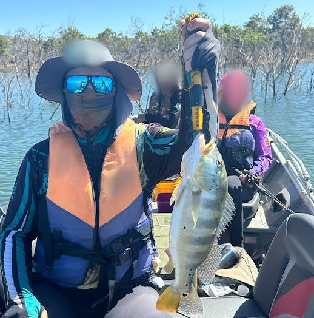

estudante do ifsp, apaixonado por programação. desenvolvimento com php, go, ruby e java. admirador de linux e open-source, utilizo zsh como interpretador e neovim como ide. gosto de utilizar postgres, mas ja trabalhei com mysql, sqlite, mongodb, cloudb e firebase. como ferramentas utilizo git e docker.

este com o peixe na mao sou eu, em niquelandia - go. sou nascido em
goiania, mas passei toda a minha vida no interior de são paulo.
desenvolvi a pescaria como uma das minhas atividades favoritas, que
aprendi com meu pai, onde guardo grandes lembranças de nossos momentos
nos rios. alem da pesca, volei e basquete são meus esportes favoritos,
nos quais acompanho.
observação: esse tucunare foi solto!